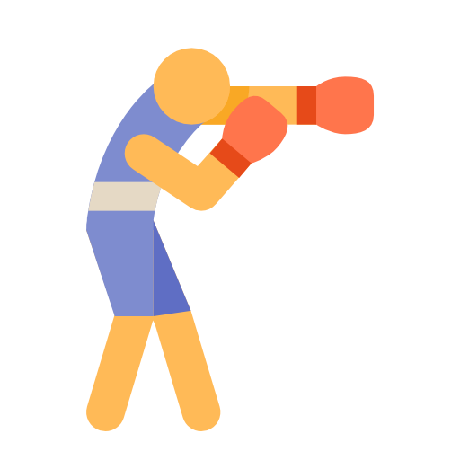

{kind=link}
Henrique DA COSTA
Consultant-formateur, Développeur web freelance
Consultant-formateur, Développeur web freelance
Adresse
5, rue Léger Gauthier
63450 Saint-Amant-Tallende
Téléphone
06 28 33 79 32
Formé à la comptabilité et au droit, je développe de nouvelles compétences en développement web.
Trés intéressé par les technologies digitales au service de la pédagogie, je développe une plateforme d'elearning spécialisée sur les métiers de la finance et du droit.

Consultant-formateur, Développeur web freelance
Depuis janvier 2017
Consultant-formateur freelance.
Juillet 2018 - Février 2019
Directeur de 2 cabinets d'expertise comptable à Clermont-Ferrand et Moulins (Groupe Cegeco). Utilisation des logiciels Agiris.
Du 1/9/2016 au 31/12/2016
Directeur technique d'un cabinet de 25 collaborateurs à Mende (Groupe AGC 48). Utilisation des logiciels ACD et DIA.
Du 1/1/2002 au 31/0/2016
Consultant formateur et expert-comptable indépendant. Utilisation des logiciels Sage.
Du 1/12/1994 au 31/8/2002
Expert-commptable et commissaire aux comptes salarié en cabinet (Groupe CHD).
1985 - 1994
Expériences diverses dont 4 ans en qualité de contremaître en charge d'une équipe de 10 ouvriers dans une usine fabriquant du carrelage (Groupe Carofrance).
Pédagogie. Formation professionnelle.
Comptabilité et consolidation.
Normes comptables internationales IFRS.
Fiscalité et droit des affaires.
2020 : Titre Bac +2 de développeur web.
2020 : Master Droit des affaires et fiscalité.
2020 : DEA Sciences de gestion.
2020 : Diplôme d'expertise comptable (DEC).
2020 : Maîtrise de droit privé.
2020 : DUT Mesures Physiques.
2020 : Bac D.
Anglais : Titulaire du Cambridge first certificate.
Portugais : Langue maternelle.
Inna SHVEDAAvocateTéléphone : 06 10 17 07 51Email : innashveda.avocats@gmail.com
Rosebel GROSChef d'entrepriseTéléphone : 06 30 87 78 50Email : rgoffice2018@gmail.com